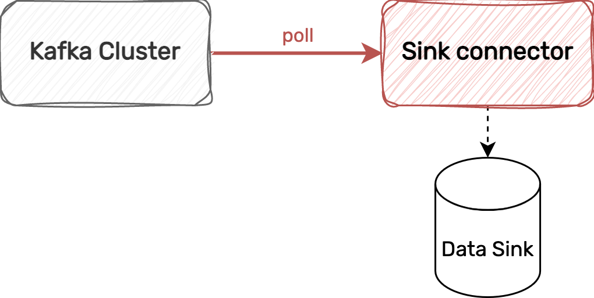

Créez des flux de données entre Kafka et une multitude de systèmes grâce à Strimzi
Quel est le lien entre ces 3 mots ?
Kafka-Kubernetes-Welsh
- Haute disponibilité
- Scalabilité
- Résilience
- Distributed and scalable by default
- Streaming/batch integration
- Rest interface
- A common framework for Kafka connectors
Source Connector
Log-Based Change Data Capture
Sink Connector
Data lake Sink Connector
+200 plugins


et plus si besoin ...
- Cast
- Drop
- ExtractField
- Filter
- GzipDecompress
- InsertField
- TopicRegexRouter
- MaskField
- ...


Kubernetes-Native Experience
Simple yet Configurable
Secure by Default
Class Isolation
Class Isolation
Data lake : ≈ 9 Millions events/day
Observability: ≈ 76 Millions events/day
- 14 Connectors
- ≈54 Tasks
- 3 Workers
- ≈1 Gi / worker
- ≈0,150 cores/ worker
- 4 plugins

On n'a pas parlé de ...


Documentation :
https://strimzi.io/Quel est le lien entre ces 3 mots ?
Kafka-Kubernetes-Welsh
Les slides
https://thomasdangleterre.github.io/strimzi-presentation/Strimzi Governance Decathlon
Tech Radar Data Exchange :
- USE IT - for Kafka Connect
- Forbidden - for Kafka Brokers (deploy with Aiven)
Alternative:
Formation Kafka
Decathlon Academy : Training - Developer